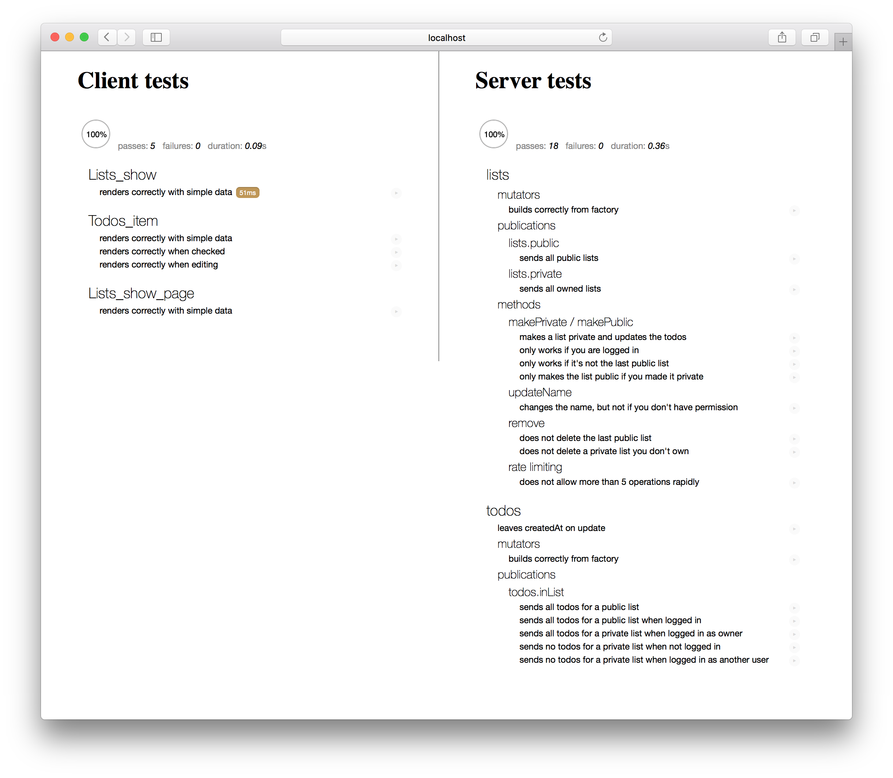

Introduction
Testing allows you to ensure your application works the way you think it does, especially as your codebase changes over time. If you have good tests, you can refactor and rewrite code with confidence. Tests are also the most concrete form of documentation of expected behavior, since other developers can figure out how to use your code by reading the tests.
Automated testing is critical because it allows you to run a far greater set of tests much more often than you could manually, allowing you to catch regression errors immediately.
Types of tests
Entire books have been written on the subject of testing, so we will simply touch on some basics of testing here. The important thing to consider when writing a test is what part of the application you are trying to test, and how you are verifying the behavior works.
Unit test: If you are testing one small module of your application, you are writing a unit test. You’ll need to stub and mock other modules that your module usually leverages in order to isolate each test. You’ll typically also need to spy on actions that the module takes to verify that they occur.
Integration test: If you are testing that multiple modules behave properly in concert, you are writing an integration test. Such tests are much more complex and may require running code both on the client and on the server to verify that communication across that divide is working as expected. Typically an integration test will still isolate a part of the entire application and directly verify results in code.
Acceptance test: If you want to write a test that can be run against any running version of your app and verifies at the browser level that the right things happen when you push the right buttons, then you are writing an acceptance test (sometimes called “end to end test”). Such tests typically try to hook into the application as little as possible, beyond perhaps setting up the right data to run a test against.
Load test: Finally you may wish to test that your application works under typical load or see how much load it can handle before it falls over. This is called a load test or stress test. Such tests can be challenging to set up and typically aren’t run often but are very important for confidence before a big production launch.
Challenges of testing in Meteor
In most ways, testing a Meteor app is no different from testing any other full stack JavaScript application. However, compared to more traditional backend or front-end focused frameworks, two factors can make testing a little more challenging:
Client/server data: Meteor’s data system makes it simple to bridge the client-server gap and often allows you to build your application without thinking about how data moves around. It becomes critical to test that your code does actually work correctly across that gap. In traditional frameworks where you spend a lot of time thinking about interfaces between client and server you can often get away with testing both sides of the interface in isolation, but Meteor’s full app test mode makes it easy to write integration tests that cover the full stack. Another challenge here is creating test data in the client context; we’ll discuss ways to do this in the section on generating test data below.
Reactivity: Meteor’s reactivity system is “eventually consistent” in the sense that when you change a reactive input to the system, you’ll see the user interface change to reflect this some time later. This can be a challenge when testing, but there are some ways to wait until those changes happen to verify the results, for example
Tracker.afterFlush().
The ‘meteor test’ command
The primary way to test your application in Meteor is the meteor test command.
This loads your application in a special “test mode”. What this does is:
- Doesn’t eagerly load any of our application code as Meteor normally would.
- Does eagerly load any file in our application (including in
imports/folders) that look like*.test[s].*, or*.spec[s].* - Sets the
Meteor.isTestflag to be true. - Starts up the test driver package (see below).
The Meteor build tool and the
meteor testcommand ignore any files located in anytests/directory. This allows you to put tests in this directory that you can run using a test runner outside of Meteor’s built-in test tools and still not have those files loaded in your application. See Meteor’s default file load order rules.
What this means is that you can write tests in files with a certain filename pattern and know they’ll not be included in normal builds of your app. When your app runs in test mode, those files will be loaded (and nothing else will), and they can import the modules you want to test. As we’ll see this is ideal for unit tests and simple integration tests.
Additionally, Meteor offers a “full application” test mode. You can run this with meteor test --full-app.
This is similar to test mode, with key differences:
- It loads test files matching
*.app-test[s].*and*.app-spec[s].*. - It does eagerly load our application code as Meteor normally would.
- Sets the
Meteor.isAppTestflag to be true (instead of theMeteor.isTestflag).
This means that the entirety of your application (including for instance the web server and client side router) is loaded and will run as normal. This enables you to write much more complex integration tests and also load additional files for acceptance tests.
Note that there is another test command in the Meteor tool; meteor test-packages is a way of testing Atmosphere packages, which is discussed in the Writing Packages article.
Driver packages
When you run a meteor test command, you must provide a --driver-package argument. A test driver is a mini-application that runs in place of your app and runs each of your defined tests, whilst reporting the results in some kind of user interface.
There are two main kinds of test driver packages:
- Web reporters: Meteor applications that display a special test reporting web UI that you can view the test results in.

- Console reporters: These run completely on the command-line and are primary used for automated testing like continuous integration (as we’ll see, typically PhantomJS is used to drive such tests).
Recommended: Mocha
In this article, we’ll use the popular Mocha test runner alongside the Chai assertion library to test our application. In order to write and run tests in Mocha, we need to add an appropriate test driver package.
There are several options. Choose the ones that makes sense for your app. You may depend on more than one and set up different test commands for different situations.
- practicalmeteor:mocha Runs client and server package or app tests and displays all results in a browser. Use spacejam for command line / CI support.
- dispatch:mocha-phantomjs Runs client and server package or app tests using PhantomJS and reports all results in the server console. Can be used for running tests on a CI server. Has a watch mode.
- dispatch:mocha-browser Runs client and server package or app tests with Mocha reporting client results in a web browser and server results in the server console. Has a watch mode.
- dispatch:mocha Runs server-only package or app tests with Mocha and reports all results in the server console. Can be used for running tests on a CI server. Has a watch mode.
NOTE: Currently tests may not run properly if you add both a practicalmeteor:* package and a dispatch:* package to your app. This is being fixed. See this issue.
These packages don’t do anything in development or production mode. They declare themselves testOnly so they are not even loaded outside of testing. But when our app is run in test mode, the test driver package takes over, executing test code on both the client and server, and rendering results to the browser.
Here’s how we can add the practicalmeteor:mocha package to our app:
1 | meteor add practicalmeteor:mocha |
Test Files
Test files themselves (for example a file named todos-item.test.js or routing.app-specs.coffee) can register themselves to be run by the test driver in the usual way for that testing library. For Mocha, that’s by using describe and it:
1 | describe('my module', function () { |
Note that arrow function use with Mocha is discouraged.
Test data
When your app is run in test mode, it is initialized with a clean test database.
If you are running a test that relies on using the database, and specifically the content of the database, you’ll need to perform some setup steps in your test to ensure the database is in the state you expect. There are some tools you can use to do this.
To ensure the database is clean, the xolvio:cleaner package is useful. You can use it to reset the database in a beforeEach block:
1 | import { resetDatabase } from 'meteor/xolvio:cleaner'; |
This technique will only work on the server. If you need to reset the database from a client test, you can use a method to do so:
1 | import { resetDatabase } from 'meteor/xolvio:cleaner'; |
As we’ve placed the code above in a test file, it will not load in normal development or production mode (which would be an incredibly bad thing!). If you create a Atmosphere package with a similar feature, you should mark it as testOnly and it will similarly only load in test mode.
Generating test data
Often it’s sensible to create a set of data to run your test against. You can use standard insert() calls against your collections to do this, but often it’s easier to create factories which help encode random test data. A great package to use to do this is dburles:factory.
In the Todos example app, we define a factory to describe how to create a test todo item, using the faker npm package:
1 | import faker from 'faker'; |
To use the factory in a test, we simply call Factory.create:
1 | // This creates a todo and a list in the database and returns the todo. |
Mocking the database
As Factory.create directly inserts documents into the collection that’s passed into the Factory.define function, it can be a problem to use it on the client. However there’s a neat isolation trick that you can do to replace the server-backed Todos client collection with a mocked out local collection, that’s encoded in the hwillson:stub-collections package.
1 | import StubCollections from 'meteor/hwillson:stub-collections'; |
In a Mocha test, it makes sense to use stub-collections in a beforeEach/afterEach block.
Unit testing
Unit testing is the process of isolating a section of code and then testing that the internals of that section work as you expect. As we’ve split our code base up into ES2015 modules it’s natural to test those modules one at a time.
By isolating a module and simply testing its internal functionality, we can write tests that are fast and accurate—they can quickly tell you where a problem in your application lies. Note however that incomplete unit tests can often hide bugs because of the way they stub out dependencies. For that reason it’s useful to combine unit tests with slower (and perhaps less commonly run) integration and acceptance tests.
A simple Blaze unit test
In the Todos example app, thanks to the fact that we’ve split our User Interface into smart and reusable components, it’s natural to want to unit test some of our reusable components (we’ll see below how to integration test our smart components).
To do so, we’ll use a very simple test helper that renders a Blaze component off-screen with a given data context. As we place it in imports, it won’t load in our app by in normal mode (as it’s not required anywhere).
1 | import { _ } from 'meteor/underscore'; |
A simple example of a reusable component to test is the Todos_item template. Here’s what a unit test looks like (you can see some others in the app repository).
imports/ui/components/client/todos-item.tests.js:
1 | /* eslint-env mocha */ |
Of particular interest in this test is the following:
Importing
When we run our app in test mode, only our test files will be eagerly loaded. In particular, this means that in order to use our templates, we need to import them! In this test, we import todos-item.js, which itself imports todos.html (yes, you do need to import the HTML files of your Blaze templates!)
Stubbing
To be a unit test, we must stub out the dependencies of the module. In this case, thanks to the way we’ve isolated our code into a reusable component, there’s not much to do; principally we need to stub out the {{_}} helper that’s created by the tap:i18n system. Note that we stub it out in a beforeEach and restore it the afterEach.
If you’re testing code that makes use of globals, you’ll need to import those globals. For instance if you have a global Todos collection and are testing this file:
1 | // logging.js |
then you’ll need to import Todos both in that file and in the test:
1 | // logging.js |
1 | // logging.test.js |
Creating data
We can use the Factory package’s .build() API to create a test document without inserting it into any collection. As we’ve been careful not to call out to any collections directly in the reusable component, we can pass the built todo document directly into the template.
A simple React unit test
We can also apply the same structure to testing React components and recommend the Enzyme package, which simulates a React component’s environment and allows you to query it using CSS selectors. A larger suite of tests is available in the react branch of the Todos app, but let’s look at a simple example for now:
1 | import { Factory } from 'meteor/factory'; |
The test is slightly simpler than the Blaze version above because the React sample app is not internationalized. Otherwise, it’s conceptually identical. We use Enzyme’s shallow function to render the TodoItem component, and the resulting object to query the document, and also to simulate user interactions. And here’s an example of simulating a user checking the todo item:
1 | import { Factory } from 'meteor/factory'; |
In this case, the TodoItem component calls a Meteor Method setCheckedStatus when the user clicks, but this is a unit test so there’s no server running. So we stub it out using Sinon. After we simulate the click, we verify that the stub was called with the correct arguments. Finally, we clean up the stub and restore the original method behavior.
Running unit tests
To run the tests that our app defines, we run our app in test mode:
1 | meteor test --driver-package practicalmeteor:mocha |
As we’ve defined a test file (imports/todos/todos.tests.js), what this means is that the file above will be eagerly loaded, adding the 'builds correctly from factory' test to the Mocha registry.
To run the tests, visit http://localhost:3000 in your browser. This kicks off practicalmeteor:mocha, which runs your tests both in the browser and on the server. It displays the test results in the browser in a Mocha test reporter:
Usually, while developing an application, it make sense to run meteor test on a second port (say 3100), while also running your main application in a separate process:
1 | # in one terminal window |
Then you can open two browser windows to see the app in action while also ensuring that you don’t break any tests as you make changes.
Isolation techniques
In the unit tests above we saw a very limited example of how to isolate a module from the larger app. This is critical for proper unit testing. Some other utilities and techniques include:
The
velocity:meteor-stubspackage, which creates simple stubs for most Meteor core objects.Alternatively, you can also use tools like Sinon to stub things directly, as we’ll see for example in our simple integration test.
The
hwillson:stub-collectionspackage we mentioned above.
There’s a lot of scope for better isolation and testing utilities.
Testing publications
Using the johanbrook:publication-collector package, you’re able to test individual publication’s output without needing to create a traditional subscription:
1 | describe('lists.public', function () { |
Note that user documents – ones that you would normally query with Meteor.users.find() – will be available as the key users on the dictionary passed from a PublicationCollector.collect() call. See the tests in the package for more details.
Integration testing
An integration test is a test that crosses module boundaries. In the simplest case, this simply means something very similar to a unit test, where you perform your isolation around multiple modules, creating a non-singular “system under test”.
Although conceptually different to unit tests, such tests typically do not need to be run any differently to unit tests and can use the same meteor test mode and isolation techniques as we use for unit tests.
However, an integration test that crosses the client-server boundary of a Meteor application (where the modules under test cross that boundary) requires a different testing infrastructure, namely Meteor’s “full app” testing mode.
Let’s take a look at example of both kinds of tests.
Simple integration test
Our reusable components were a natural fit for a unit test; similarly our smart components tend to require an integration test to really be exercised properly, as the job of a smart component is to bring data together and supply it to a reusable component.
In the Todos example app, we have an integration test for the Lists_show_page smart component. This test simply ensures that when the correct data is present in the database, the template renders correctly – that it is gathering the correct data as we expect. It isolates the rendering tree from the more complex data subscription part of the Meteor stack. If we wanted to test that the subscription side of things was working in concert with the smart component, we’d need to write a full app integration test.
imports/ui/components/client/todos-item.tests.js:
1 | /* eslint-env mocha */ |
Of particular interest in this test is the following:
Importing
As we’ll run this test in the same way that we did our unit test, we need to import the relevant modules under test in the same way that we did in the unit test.
Stubbing
As the system under test in our integration test has a larger surface area, we need to stub out a few more points of integration with the rest of the stack. Of particular interest here is our use of the hwillson:stub-collections package and of Sinon to stub out Flow Router and our Subscription.
Creating data
In this test, we used Factory package’s .create() API, which inserts data into the real collection. However, as we’ve proxied all of the Todos and Lists collection methods onto a local collection (this is what hwillson:stub-collections is doing), we won’t run into any problems with trying to perform inserts from the client.
This integration test can be run the exact same way as we ran unit tests above.
Full-app integration test
In the Todos example application, we have a integration test which ensures that we see the full contents of a list when we route to it, which demonstrates a few techniques of integration tests.
imports/startup/client/routes.app-test.js:
1 | /* eslint-env mocha */ |
Of note here:
Before running, each test sets up the data it needs using the
generateDatahelper (see the section on creating integration test data for more detail) then goes to the homepage.Although Flow Router doesn’t take a done callback, we can use
Tracker.afterFlushto wait for all its reactive consequences to occur.Here we wrote a little utility (which could be abstracted into a general package) to wait for all the subscriptions which are created by the route change (the
todos.inListsubscription in this case) to become ready before checking their data.
Running full-app tests
To run the full-app tests in our application, we run:
1 | meteor test --full-app --driver-package practicalmeteor:mocha |
When we connect to the test instance in a browser, we want to render a testing UI rather than our app UI, so the mocha-web-reporter package will hide any UI of our application and overlay it with its own. However the app continues to behave as normal, so we are able to route around and check the correct data is loaded.
Creating data
To create test data in full-app test mode, it usually makes sense to create some special test methods which we can call from the client side. Usually when testing a full app, we want to make sure the publications are sending through the correct data (as we do in this test), and so it’s not sufficient to stub out the collections and place synthetic data in them. Instead we’ll want to actually create data on the server and let it be published.
Similar to the way we cleared the database using a method in the beforeEach in the test data section above, we can call a method to do that before running our tests. In the case of our routing tests, we’ve used a file called imports/api/generate-data.app-tests.js which defines this method (and will only be loaded in full app test mode, so is not available in general!):
1 | // This file will be auto-imported in the app-test context, |
Note that we’ve exported a client-side symbol generateData which is a promisified version of the method call, which makes it simpler to use this sequentially in tests.
Also of note is the way we use a second DDP connection to the server in order to send these test “control” method calls.
Acceptance testing
Acceptance testing is the process of taking an unmodified version of our application and testing it from the “outside” to make sure it behaves in a way we expect. Typically if an app passes acceptance tests, we have done our job properly from a product perspective.
As acceptance tests test the behavior of the application in a full browser context in a generic way, there are a range of tools that you can use to specify and run such tests. In this guide we’ll demonstrate using Chimp, an acceptance testing tool with a few neat Meteor-specific features that makes it easy to use.
Chimp requires node version 4 or 5. You can check your node version by running:
1 | node -v |
You can install version 4 from nodejs.org or version 5 with brew install node. Then we can install the Chimp tool globally using:
1 | npm install --global chimp |
Note that you can also install Chimp as a
devDependencyin yourpackage.jsonbut you may run into problems deploying your application as it includes binary dependencies. You can avoid such problems by runningmeteor npm pruneto remove non-production dependencies before deploying.
Chimp has a variety of options for setting it up, but we can add some npm scripts which will run the currently tests we define in Chimp’s two main modes. We can add them to our package.json:
1 | { |
Chimp will now look in the tests/ directory (otherwise ignored by the Meteor tool) for files in which you define acceptance tests. In the Todos example app, we define a simple test that ensures we can click the “create list” button.
1 | /* eslint-env mocha */ |
Running acceptance tests
To run acceptance tests, we simply need to start our Meteor app as usual, and point Chimp at it.
In one terminal, we can do:
1 | meteor |
In another:
1 | meteor npm run chimp-watch |
The chimp-watch command will then run the test in a browser, and continue to re-run it as we change the test or the application. (Note that the test assumes we are running the app on port 3000).
Thus it’s a good way to develop the test—this is why chimp has a feature where we mark tests with a @watch in the name to call out the tests we want to work on (running our entire acceptance test suite can be time consuming in a large application).
The chimp-test command will run all of the tests once only and is good for testing that our suite passes, either as a manual step, or as part of a continuous integration process.
Creating data
Although we can run the acceptance test against our “pure” Meteor app, as we’ve done above, it often makes sense to start our meteor server with a special test driver, tmeasday:acceptance-test-driver. (You’ll need to meteor add it to your app):
1 | meteor test --full-app --driver-package tmeasday:acceptance-test-driver |
The advantage of running our acceptance test suite pointed at an app that runs in full app test mode is that all of the data generating methods that we’ve created remain available. Otherwise the acceptance-test-driver does nothing.
In Chimp tests, you have a DDP connection to the server available on the server variable. You can thus use server.call() (which is wrapped to be synchronous in Chimp tests) to call these methods. This is a convenient way to share data preparation code between acceptance and integration tests.
Continuous Integration
Continuous integration testing is the process of running tests on every commit of your project.
There are two principal ways to do it: on the developer’s machine before allowing them to push code to the central repository, and on a dedicated CI server after each push. Both techniques are useful, and both require running tests in a commandline-only fashion.
Command line
We’ve seen one example of running tests on the command line, using our meteor npm run chimp-test mode.
We can also use a command-line driver for Mocha dispatch:mocha-phantomjs to run our standard tests on the command line.
Adding and using the package is straightforward:
1 | meteor add dispatch:mocha-phantomjs |
(The --once argument ensures the Meteor process stops once the test is done).
We can also add that command to our package.json as a test script:
1 | { |
Now we can run the tests with meteor npm test.
CircleCI
CircleCI is a great continuous integration service that allows us to run (possibly time consuming) tests on every push to a repository like GitHub. To use it with the commandline test we’ve defined above, we can follow their standard getting started tutorial and use a circle.yml file similar to this:
1 | machine: |